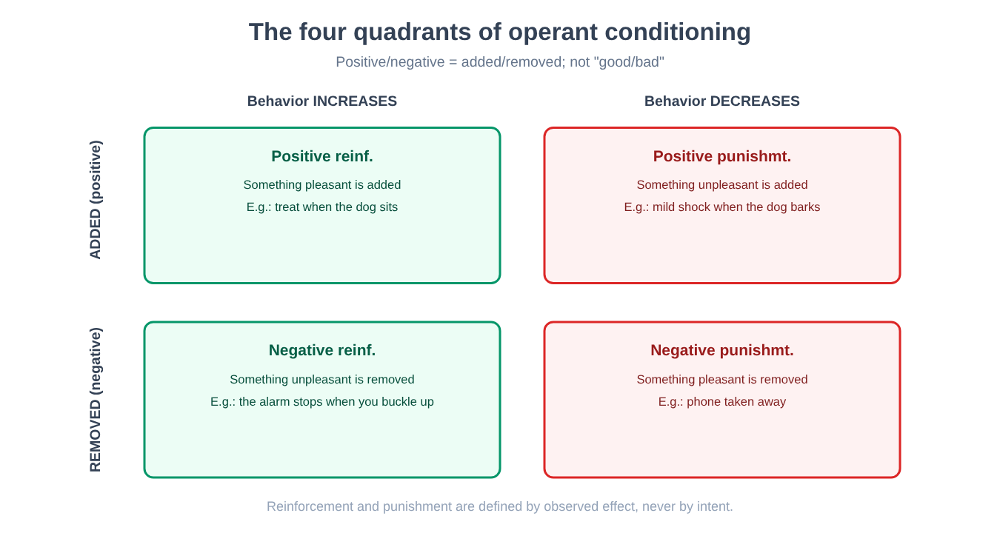
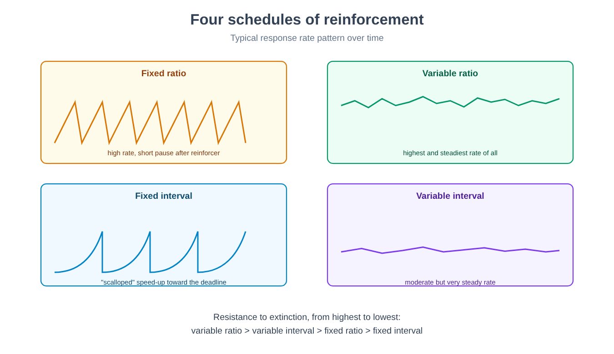

Part III. The mind as behavior: the behaviorist program
Chapter 14 — The rejection of the inner life
[IN A NUTSHELL]
The first decades of experimental psychology (chapter 7) and the psychoanalytic tradition (Part II) shared, despite every other difference, one assumption: the mind has an inner content worth describing, whether conscious elements broken down by a trained observer or unconscious conflicts reconstructed by an analyst. This chapter sets out the opposite methodological move: if a mental content cannot be observed by more than one person in the same way, it is not scientific data — what remains is behavior alone, measurable.
Imagine having to judge whether a dog "is hungry" without being able to ask it and without being able to look inside its head. You can observe how much it eats, how quickly, how much saliva it produces at the sight of food. Everything you can measure is behavior and the conditions surrounding it — stimuli before, responses after. Hunger as an inner state remains an inference, not a datum.
Behaviorism takes this observation, valid for the dog, and applies it without exception to human beings: any statement about the mind that cannot be translated into observable, measurable behavior, repeatable by different observers with the same result, does not belong to the domain of scientific psychology. Not because inner life does not exist — on this point the founders of the program did not speak with one voice — but because building a science on data that only one observer at a time can access (introspection, private by definition) produces, according to this critique, exactly the kind of disagreement between schools already encountered in chapter 7: different laboratories, different reports, no independent way of establishing who was right.
What is gained
[THE EXPERIMENTAL DESIGN]
The case that made the program popular. An eleven-month-old child, repeatedly exposed to the pairing of a small white animal (initially neutral, not feared) with a loud, sudden noise immediately after contact with the animal, developed after a few pairings a fear reaction at the mere sight of the animal, later generalized to other white, furry objects.
Why it is a paradigmatic behaviorist experiment. No hypothesis is formulated about any inner content of the child (a desire, a conflict). An observable stimulus is manipulated (the animal–noise pairing) and an observable response is measured (crying, avoidance, attempts to move away). The entire explanation of the learned fear rests on this single stimulus–response chain.
The limitation, with hindsight. A single child, no control group, no standardized measure of the intensity of the reaction, and an ethical oversight that no committee would approve today: the experiment deliberately exposed a minor to an induced fear without any stated plan to remove it. For these reasons it remains a textbook case of the demonstrative power of a well-told anecdote rather than an experiment in the full sense of chapter 2 — a point the historiography of the discipline has returned to several times, including recent investigations into the real identity of the child involved.
Behaviorism offers a concrete and verifiable advantage: it makes falsifiable, in the full sense discussed in chapter 2 and chapter 8, what previously was not. A prediction about behavior — "if I pair this neutral stimulus with this consequence, the frequency of this response will change in this direction" — can be checked, repeated, refuted. It is the same kind of rigor that the hypothesis of the unconscious, as formulated in its classical version (chapter 8), could not achieve.
What is lost
[CONTROVERSIAL QUESTION]
Rejecting introspection as scientific data is not the same as denying that subjective experience exists. But the distinction between the two positions — "inner experience is not scientifically usable data" versus "inner experience does not exist" — has historically been blurred, both by enthusiastic supporters and by critics of the program. The stronger version (behavior is all the mind is, not merely all of it that can be measured) remains a philosophical position distinct from the methodological choice, and it is the latter, not the former, that produced the lasting experimental results the following chapters will describe.
The price paid is giving up any question about what happens "inside" between stimulus and response — thought, imagination, inner reasoning — treated, in the most radical version of the program, as an irrelevant or nonexistent black box. This choice would produce, generations later, its own internal crisis: chapter 19 of this part will describe the first experiments that behaviorism itself could not explain without readmitting something that resembles, however different in form, an internal representation.
[MINI-TIMELINE]
The founding manifesto of the behaviorist program was published in the first two decades of the twentieth century, proposing observable behavior as the only legitimate object of psychology. The case of the child and the white animal, discussed above, dates from a few years later. Operant conditioning (chapter 16) and its schedules of reinforcement (chapter 17) were developed systematically from the 1930s onward, with the systematization of schedules of reinforcement in 1957. The first experimental cracks within the program (chapter 19) appeared as early as the 1930s, decades before the program lost its dominant position.
[KEY POINT OF THE CHAPTER]
• Behaviorism rejects introspection as scientific data: only the observable stimulus and the observable response count.
• The advantage is full falsifiability: verifiable behavioral predictions, in contrast with the falsifiability problem of the classical unconscious (chapter 8).
• The cost is giving up every question about what lies between stimulus and response — a choice that will be undermined from within (chapter 19).
• The best-known historical case (conditioned fear in a child) is today a textbook case of methodological limitations, not a model of experimental rigor.
Chapter 15 — Classical conditioning
[IN A NUTSHELL]
This chapter sets out the experimental design that founded the entire program: how an automatic, involuntary response (salivation) can be transferred, through repeated pairing, from a stimulus that naturally elicits it to one that previously had no effect. The chapter also sets out the complete technical vocabulary of the phenomenon and its contemporary reinterpretation in terms of prediction error.
The original design
[THE EXPERIMENTAL DESIGN]
The starting phenomenon. A dog salivates automatically at the sight or smell of food — a reflex, unlearned response that we will call the unconditioned response (UR), elicited by an unconditioned stimulus (US), here the food itself.
The manipulation. Before each meal, a stimulus that was in itself neutral with respect to salivation — a sound, for example — was repeatedly presented immediately before the food was presented. After a sufficient number of pairings, the sound alone, without any food, elicited salivation.
The result. The sound, initially neutral, had become a conditioned stimulus (CS), capable of evoking a conditioned response (CR) — salivation to the sound alone — structurally similar to the original unconditioned response, though often of lower intensity.
Why the design is solid. The temporal sequence (sound before the food, not after) is manipulated systematically, the response is measured with an objective instrument (the amount of saliva collected), and the effect disappears predictably if the pairing stops — the property described below as extinction.
The complete vocabulary of the phenomenon
Acquisition is the phase in which the association between CS and US forms, typically faster in the first pairings and slower as the conditioned response approaches its maximum strength.
Extinction is the gradual disappearance of the conditioned response when the conditioned stimulus is presented repeatedly without being followed by the unconditioned stimulus — the sound without food, in the long run, stops producing salivation.
Spontaneous recovery is a phenomenon that has surprised generations of students of this subject: after a rest period following extinction, the conditioned response can reappear, albeit weakened, when the conditioned stimulus is presented again — a sign that extinction does not erase the original association but adds an inhibition superimposed on it, which the passage of time weakens.
Stimulus generalization is the tendency to respond also to stimuli similar, but not identical, to the original conditioned stimulus — the more the new stimulus resembles the original, the stronger the response, along a measurable gradient.
Discrimination is the opposite and complementary process: if a similar stimulus is systematically presented without the reinforcement that accompanies the original, the organism learns to respond selectively only to the latter, narrowing the generalization gradient.
[COMMON BELIEF]
Classical conditioning is often described, in everyday language, as if the conditioned stimulus "became" the unconditioned stimulus. It does not: the dog does not treat the sound as if it were edible food. What is transferred is the stimulus's capacity to evoke a related anticipatory response, not the identity of the stimulus itself. The distinction matters in chapter 49 (the fear circuit), where the same principle will be applied to stimuli associated with a danger rather than a pleasure.
The modern reinterpretation: prediction error
For much of the twentieth century, classical conditioning was described as a simple effect of temporal contiguity: it is enough for two events to occur close together in time, and the association forms. An experiment that manipulated not contiguity but the information conveyed by a stimulus showed that this description was incomplete.
[MIND THE LEAP]
If an animal is first taught that a stimulus A fully predicts a consequence, and only afterward is presented with the compound "A plus B" followed by the same consequence, the animal learns no significant association between B and the consequence — even though B was paired with the consequence exactly as many times as in the simple pairing studied above. This phenomenon, known as blocking, is incompatible with an explanation based on contiguity alone: B was always presented together with the consequence, yet it produces no learning, because A already predicted it entirely. What matters is not temporal proximity as such, but how far the consequence was already expected.
To account for this and other similar phenomena, a mathematical model was proposed in which learning depends not on the mere co-occurrence of stimuli but on the difference between what actually happened and what was already expected — a prediction error.
[FORMULA]
The prediction-error model of conditioning (Rescorla-Wagner).
ΔV = α · β · (λ − V)
Where:
• ΔV is the change, on a single trial, in the strength of the association between the conditioned stimulus and the consequence;
• α (alpha) is the salience of the conditioned stimulus — how noticeable it is, a value between 0 and 1;
• β (beta) is a parameter related to the strength of the consequence (the unconditioned stimulus), also between 0 and 1;
• λ (lambda) is the maximum associative strength that the consequence can support;
• V is the associative strength already held by the stimulus (and by any other stimuli present together with it) before this trial.
The term (λ − V) is the prediction error: the distance between what was expected (V) and the most the situation would allow one to expect (λ). As V approaches λ, the error shrinks and learning slows until it stops — which is exactly why, in the blocking experiment described above, stimulus B learns nothing: the prediction error is already close to zero before B even appears, because A already predicted everything.
Worked example. Let α = 0.5 (a moderately salient stimulus), β = 0.6 (a consequence of intermediate strength), λ = 100 (the maximum possible associative strength for this consequence) and V = 40 (the association already acquired in previous trials). Then: ΔV = 0.5 × 0.6 × (100 − 40) = 0.3 × 60 = 18. The associative strength increases by 18 points on this trial, bringing V to 58 for the next trial — an increment that will grow progressively smaller as V approaches 100, tracing the typical acquisition curve that slows down without ever stopping abruptly.
[DOES IT STILL HOLD?]
This model, proposed for classical conditioning well before techniques existed for observing the activity of single neurons in an awake animal, found a striking counterpart, in an extension that takes time into account, decades later in an entirely different domain: recordings of the activity of dopaminergic neurons in monkeys during reward tasks showed that these neurons do not simply respond to reward as such, but signal precisely the difference between the reward received and the reward expected — increasing their activity when the reward is unexpected or larger than predicted, staying silent when it is fully predicted, and reducing their activity below baseline when an expected reward fails to arrive. It is one of the most solid convergences between a mathematical model of behavior developed without any reference to the brain and a biological mechanism observed independently — a theme chapter 52 will return to in connection with motivation and reward.
[KEY POINT OF THE CHAPTER]
• Classical conditioning turns a neutral stimulus into a stimulus capable of evoking a response, through repeated pairing with a stimulus that naturally elicits it.
• Acquisition, extinction, spontaneous recovery, generalization and discrimination are the five fundamental phenomena of the paradigm.
• The blocking phenomenon shows that temporal contiguity alone is not enough to explain learning: what matters is prediction error.
• The prediction-error model has found a biological counterpart in the activity of reward-related dopaminergic neurons (chapter 52).
• Applied to threatening stimuli, the same basic mechanism underlies the learned fear circuit (chapter 49).
Chapter 16 — Operant conditioning
[IN A NUTSHELL]
Classical conditioning explains how a stimulus comes to evoke an automatic response. It does not explain, however, how a voluntary behavior — pressing a lever, raising a hand, avoiding a street — becomes more or less frequent depending on its consequences. That is the subject of this chapter: operant conditioning, in which the behavior itself, not a stimulus that precedes it, is what is modified by its consequences.
The experimental design
[THE EXPERIMENTAL DESIGN]
The apparatus. An animal (typically a rat or a pigeon) is placed in an experimental chamber containing a lever or a disk that the animal can operate, connected to a device that automatically delivers a consequence (food, for example) according to rules set by the experimenter.
The basic logic. At first the animal explores the environment with no stated goal. When it happens to operate the lever and receives food, the probability that it will repeat that action increases. No instruction is given: behavior changes solely on the basis of what follows it.
The advantage of the method. The apparatus makes it possible to record the frequency of the response automatically and continuously over time, without the intervention of a human observer who might introduce subjectivity into the measurement — a reliability problem similar to those discussed in chapters 3 and 7, solved here by mechanical recording rather than by training the observer.
The vocabulary: reinforcement and punishment, positive and negative
The most misunderstood technical term in this tradition is probably the pair positive/negative, which in everyday language is associated with "good" and "bad." In the technical vocabulary of operant conditioning, positive and negative simply indicate the addition or removal of something, regardless of how pleasant or unpleasant that something is.
[COMMON BELIEF]
"Negative reinforcement" does not mean punishment, however much the name suggests otherwise to someone hearing it for the first time. Reinforcement, by definition, increases the frequency of a behavior; punishment decreases it. "Negative" and "positive" specify only whether, to produce that effect, something is taken away (negative) or added (positive). Negative reinforcement increases a behavior by removing something unpleasant — fastening your seat belt to make a warning chime stop is negative reinforcement of the behavior of buckling up, not a punishment.
This yields four combinations, often called the four quadrants of operant conditioning:
| Quadrant | What happens | Effect on behavior | Example |
|---|---|---|---|
| Positive reinforcement | Something pleasant is added | The behavior increases | The dog gets a treat when it sits |
| Negative reinforcement | Something unpleasant is removed | The behavior increases | The alarm stops when you fasten your seat belt |
| Positive punishment | Something unpleasant is added | The behavior decreases | A mild shock when the dog barks |
| Negative punishment | Something pleasant is removed | The behavior decreases | The phone is taken away after an undesired behavior |

[MIND THE LEAP]
A common error is to infer the effectiveness of a consequence from its objective nature rather than from its measured effect on behavior. If a consequence intended as punishment increases, rather than decreases, the frequency of the behavior it is supposed to discourage — as happens, for example, when the attention received during a reprimand is more welcome than the usual indifference — then, by operational definition, that consequence is not functioning as punishment, whatever the intention of the person delivering it. In this tradition, the definition of reinforcement and punishment is always functional (based on the observed effect), never based on the intention or the apparent nature of the stimulus.
Why punishment is a limited tool
Research on this paradigm converges on a point often overlooked in the practical use of punishment: it suppresses a behavior in the context in which it is applied, but it does not teach which alternative behavior to put in its place; it tends to generalize unpredictably (avoidance of the context or of the person who punishes, not only of the punished behavior); and, if introduced gradually, it tends to produce habituation and to require increasing intensity. For these reasons, reinforcing a desirable alternative behavior, discussed in full in chapter 18, is considered by experimental research a more effective tool and one more stable over time.
[KEY POINT OF THE CHAPTER]
• Operant conditioning modifies a voluntary behavior on the basis of its consequences, not an automatic stimulus as in classical conditioning (chapter 15).
• Positive/negative indicate the addition/removal of a stimulus, not "good/bad": the distinction gives rise to four quadrants (positive reinforcement, negative reinforcement, positive punishment, negative punishment).
• Reinforcement and punishment are defined functionally, by the observed effect on the frequency of the behavior, not by the intention of whoever delivers them.
• Punishment suppresses without teaching an alternative, generalizes unpredictably and loses effectiveness over time — limitations that chapter 18 will address by proposing constructive alternative tools.
Chapter 17 — Schedules of reinforcement
[IN A NUTSHELL]
Not every reinforcer follows every single occurrence of a behavior. This chapter sets out how the frequency and, above all, the resistance to extinction of a behavior change depending on when and how regularly reinforcement arrives — a principle with direct consequences for gambling and for the design of digital apps built to maximize engagement.
Ratio and interval, fixed and variable
A schedule of reinforcement specifies the rule by which reinforcement follows behavior, crossing two independent dimensions: what counts (the number of responses, or the time elapsed) and whether that count is constant or unpredictable.
A fixed ratio schedule delivers reinforcement after a constant number of responses (for example, every tenth lever press); it produces a high rate of responding with a brief pause right after each reinforcement.
A variable ratio schedule delivers reinforcement after a number of responses that varies unpredictably around an average (sometimes after 3, sometimes after 15, on average after 10); it produces the highest and steadiest rate of responding of all the schedules, without the pauses typical of the fixed ratio.
A fixed interval schedule delivers reinforcement for the first response emitted after a constant time since the last reinforcement; it produces a characteristic increase in response rate as the interval nears its end, with almost no responding right after the previous reinforcement.
A variable interval schedule delivers reinforcement for the first response emitted after a time that varies unpredictably around an average; it produces a moderate but very steady rate of responding over time, without the fluctuations of the fixed interval.

Why variable schedules are more resistant to extinction
[NUMBERS]
When the persistence of behavior is compared after all reinforcement stops (extinction, already encountered in chapter 15 for classical conditioning), intermittent schedules produce more responses before the behavior ceases than continuous reinforcement does, and variable schedules more than fixed ones: these two results are among the most consistent and replicated in the research tradition on operant conditioning. The full ordering among the four schedules is less clear-cut: at equal rates of reinforcement, the most careful studies (Nevin and colleagues, 2001) found resistance to extinction equal or greater for the variable interval than for the variable ratio, which nonetheless remains the schedule with the highest rate of responding.
[MIND THE LEAP]
The unpredictability of reinforcement, more than its overall frequency, is an important variable for resistance to extinction. A variable ratio schedule can deliver, on average, one reinforcement every ten responses — exactly like a fixed ratio of ten — yet produce much greater persistence when reinforcement stops altogether. The proposed reason is that, on a variable schedule, the organism has no way of distinguishing "this time the reinforcement did not come" from "the reinforcement simply requires a few more responses" — the absence of reinforcement, after all, is part of normal experience even when the schedule is still running regularly.
Slot-machine gambling is the most frequently cited application of this principle: the ratio between plays and wins is variable and unpredictable, and it is precisely this unpredictability, more than the average size of the winnings, that is proposed as a key factor in the persistence of gambling behavior even in the absence of a net positive gain over time. The same principle has been applied, more recently, to the design of notifications and content in digital apps: it has been proposed that a stream of content (messages, updates, virtual rewards) delivered at an unpredictable cadence tends to sustain repeated checking of the app in a way more resistant to abandonment than a fixed, predictable cadence; direct evidence on notifications and apps, however, is far scarcer than laboratory evidence.
[CONTROVERSIAL QUESTION]
There is a conceptual convergence worth pointing out explicitly, even though the two explanations remain distinct and not interchangeable: the persistence of a behavior that has stopped producing any evident benefit is not foreign to what was encountered, with entirely different theoretical tools, in connection with the psychoanalytic repetition compulsion (chapter 11) — where the repetition of a disadvantageous relational pattern was explained by a drive, not by an intermittent schedule of reinforcement. The two traditions, starting from incompatible assumptions about how the mind works, end up describing the same behavioral puzzle: why a pattern that no longer produces any visible gain can turn out, under certain conditions, to be the hardest of all to extinguish.
[KEY POINT OF THE CHAPTER]
• The four basic schedules of reinforcement cross what counts (responses or time) with how predictable the count is (fixed or variable).
• The variable ratio produces the highest rate of responding; intermittent schedules resist extinction more than continuous reinforcement, and variable schedules more than fixed ones.
• Unpredictability, more than the average frequency of reinforcement, is an important factor in resistance: the organism cannot distinguish a normal temporary absence from real extinction.
• Gambling and the design of digital apps are the most direct applications of this principle.
• The persistence of behaviors that are no longer advantageous finds a conceptual parallel, not an equivalence, in the psychoanalytic repetition compulsion (chapter 11).
Chapter 18 — Building behaviors
[IN A NUTSHELL]
The previous chapters described how an existing behavior changes in frequency according to its consequences. This chapter tackles a different and practically more important problem: how to build, from scratch, a behavior the organism has never yet emitted — the applied side of this tradition, which has produced the most lasting results outside the laboratory as well.
Shaping
Shaping consists in reinforcing successive approximations ever closer to the desired final behavior, instead of waiting for the complete behavior to appear spontaneously — an event that, for a complex behavior, might never occur by pure chance.
[THE EXPERIMENTAL DESIGN]
The problem. Teaching an animal a behavior it never emits spontaneously (for example, pushing a ball toward a target with its snout) cannot start from reinforcing the final behavior, because that behavior, in the absence of prior learning, never occurs on its own.
The solution. First, any movement in roughly the right direction is reinforced (for example, simply orienting toward the ball); once this behavior stabilizes, the criterion for reinforcement gradually shifts toward increasingly precise approximations (touching the ball, then pushing it, then pushing it toward the target), until the final behavior is reached.
Why it works. Each intermediate stage can be reached from the previous one with a small margin of random variability, so that the target behavior of each stage has a reasonable probability of appearing spontaneously at least once, allowing reinforcement to act on it.
Chaining and the fading of prompts
Chaining builds a complex sequence of behaviors by linking individual steps already learned separately, in which the completion of each step becomes the stimulus signaling the start of the next — tying one's shoes, for example, is typically taught as a chain of smaller steps, each initially reinforced independently.
Prompting and fading consists in initially providing explicit support (a verbal instruction, physical guidance, an example to imitate) to obtain the desired behavior, and then gradually reducing that support as the behavior becomes established on its own — the goal is for the final behavior to depend on the natural stimulus of the situation, no longer on the artificial support used to establish it.
[COMMON BELIEF]
Initial help that is too generous, kept up for too long, does not speed up independent learning of the behavior: it risks producing a dependence on the support itself, which at that point becomes part of the stimulus needed to obtain the behavior. Fading requires explicit planning of when and how to reduce the support, not only of how to provide it at the start.
Differential reinforcement of an alternative behavior
Shaping builds a new behavior; differential reinforcement of alternative behavior serves instead to reduce an undesired one without resorting to punishment. The procedure has two parts: a desirable behavior that cannot be emitted at the same time as the one to be reduced is systematically reinforced, and the undesired behavior is no longer reinforced. A child who disrupts the lesson by shouting to get attention, for example, receives attention every time they raise their hand and wait their turn, and none when they shout. The undesired behavior is not punished: it loses its function, that is, it stops producing the consequence that maintained it (in the language of chapter 15, it undergoes extinction), while the alternative produces that consequence regularly.
This is why chapter 16 described it as a more stable tool than punishment: punishment removes a behavior without saying what to do in its place, whereas differential reinforcement offers an alternative that achieves the same result. The limitation is practical: it works only if the function of the undesired behavior is known, that is, which consequence maintains it, and this is why the following section devotes space to functional analysis.
Antecedent control and functional analysis
So far the chapter has focused on what follows a behavior. But a behavior is also influenced by what precedes it: antecedent control modifies the probability of a behavior by acting on the situation that precedes it, not on its consequences — making a stimulus that signals the occasion for behaving in a certain way more or less present, more or less salient.
Functional analysis is the systematic procedure by which the antecedents and consequences that actually maintain a problem behavior in real practice are identified, instead of being assumed in advance — an apparently identical behavior (for example, repeated crying) can be maintained, in different people, by completely different consequences (attention received, escape from an unwelcome task, simple sensory stimulation), and effective intervention depends on having correctly identified which consequence, in that specific case, is actually maintaining the behavior.
[DOES IT STILL HOLD?]
These applied principles — shaping, chaining, prompting and fading, antecedent control, functional analysis — remain today among the most consistently used contributions of the entire behaviorist tradition, applied in fields ranging from teaching new skills in atypical development to rehabilitation, from animal training to the design of interfaces and training programs. Unlike other components of this tradition (for example the ambition to reduce all of psychology to observable behavior alone, discussed in chapter 14), this applied side does not depend on accepting the broader theoretical framework from which it arose: it works, and has been verified empirically, regardless of how much one shares the rest of the program.
[KEY POINT OF THE CHAPTER]
• Shaping builds a new behavior by reinforcing successive approximations ever closer to the final target.
• Chaining links already learned steps into a sequence, in which each step signals the start of the next.
• Fading gradually reduces initial support, so that the final behavior does not depend on the support rather than on the natural stimulus.
• Antecedent control acts on what precedes behavior, not only on what follows it.
• Functional analysis identifies which specific consequence actually maintains a problem behavior, before intervening.
• This applied side remains among the most consistently used contributions of the tradition, regardless of whether its broader theoretical framework is accepted.
Chapter 19 — Limits from within
[IN A NUTSHELL]
This closing chapter of Part III sets out how the behaviorist program was thrown into crisis not by external criticism but by the results of its own experiments: phenomena that conditioning, as it had been formulated, could neither predict nor explain without reintroducing something resembling an internal representation.
Biological preparedness and instinctive drift
Classical and operant conditioning were initially proposed as general processes, in principle applicable to any combination of stimulus and response, in any species, with equal ease. Experimental research has shown that this generality does not hold.
[THE EXPERIMENTAL DESIGN]
The phenomenon. Some associations form with far fewer pairings than expected, even with a single pairing, if they involve combinations that are biologically relevant to the species — for example, the association between the taste of a food and subsequent gastric illness, even hours later, forms in a rat after a single exposure, whereas the same procedure applied to other combinations of stimuli (for example a sound paired with the same illness) requires many more pairings or does not form at all.
The interpretation. This result, hard to reconcile with a general learning principle indifferent to the specific content of the stimuli involved, was explained by the idea of biological preparedness: evolution would have predisposed some organisms to learn more easily precisely those associations relevant to the survival of the species (avoiding spoiled food), making conditioning anything but uniform across different combinations of stimuli.
A complementary phenomenon, instinctive drift, was observed during attempts to train animals in economically useful behaviors through operant conditioning: after initially successful training, some animals progressively began to replace the learned and reinforced behavior with instinctive behaviors typical of the species, even when the latter no longer produced any reinforcement and indeed interrupted its delivery — as if, over time, the natural behavior of the species re-emerged and prevailed over the artificially conditioned behavior, in direct contradiction of the idea that any response can be linked to any consequence with equal ease.
Latent learning
[THE EXPERIMENTAL DESIGN]
The problem. According to a strict reading of operant conditioning, learning requires reinforcement in order to form: with no consequence linked to the behavior, no association should be established.
The experiment. Three groups of rats ran the same complex maze for seventeen days (Tolman and Honzik, 1930). One group found food at the end from the first day and improved gradually. A second group never found food and showed poor, nearly unchanged performance — so far consistent with the theory. A third group explored for ten days without reward; when food appeared on the eleventh day, its running time dropped almost immediately to the level of the first group, or slightly below.
The interpretation. The sudden improvement, too rapid to be explained by learning that begins only with the introduction of the reward, indicated that the rats had learned the structure of the maze during free exploration, without any reinforcement — latent learning, which remained unexpressed in behavior until a reason to use it (the reward) made it worthwhile to express. The acquired knowledge was described as an internal cognitive map of the spatial layout of the maze — a term that explicitly presupposes an internal representation, exactly what the strictest behaviorist program had set out to avoid.
[MIND THE LEAP]
Latent learning does not refute the claim that reinforcement influences behavior — it does, and massively, as the collapse in running time as soon as the reward appears shows. What the experiment refutes is the stronger idea that without reinforcement no learning forms at all. The distinction between learning (which can occur without reinforcement) and performance (which reinforcement can influence separately, making it worthwhile to show what has already been learned) is the most lasting methodological lesson of this experiment.
Observational learning
[THE EXPERIMENTAL DESIGN]
The question. Conditioning, both classical and operant, requires the organism itself to experience the stimulus or the consequence directly. Can a behavior form merely by observing another individual, without personally experiencing either the stimulus or the consequence?
The design. Preschool children were divided into groups and shown an adult engaging in physical and verbal aggression toward a large inflatable doll, in some conditions followed by a positive consequence for the adult (praise), in others by a negative consequence (reprimand), and in others still with no visible consequence. Afterward, the children were given the chance to play alone with the same doll, and their behavior was observed and coded by raters (in later studies, blind to the condition). The three consequence conditions come from a 1965 study; the comparison with children who had seen no model comes from the original 1961 study.
The result. The children who had observed the aggressive behavior spontaneously imitated specific actions observed in the adult, to a markedly greater extent than children who had not observed that demonstration — learning that took place entirely through observation, without the child ever having received either reinforcement or punishment for that behavior. The consequence received by the observed adult modulated above all the probability that the child would spontaneously perform the learned behavior, rather than the learning of the behavior itself, which occurred anyway even in the condition with no visible consequences.
Why it is a problem for the behaviorist program in the strict sense. The child's behavior changes in the absence of any direct experience of stimulus, response and consequence of its own: the only available explanation requires admitting that the observer internally represents, memorizes and later reproduces a sequence of actions never performed or reinforced firsthand — exactly the kind of internal process that strict behaviorism would have wanted to avoid postulating.
[DOES IT STILL HOLD?]
These three phenomena — biological preparedness, latent learning, observational learning — do not refute the reality of classical and operant conditioning, widely confirmed and still in use (chapter 18). They refute the program's most radical ambition, set out in chapter 14: that every behavior, in every organism, can be explained by the history of stimuli, responses and consequences alone, with no need for internal representations. It was precisely from these results, together with parallel developments in the study of language and problem solving, that part of experimental psychology began once again to deal explicitly with what happens "inside" the black box — a change of perspective that chapter 41 will take up in full as the cognitive revolution, and that chapter 56 will take up in connection with child development, where observational learning plays a central role.
[KEY POINT OF THE CHAPTER]
• Biological preparedness shows that not all associations form with equal ease: some combinations of stimuli, relevant to the survival of the species, are learned with a single pairing.
• Instinctive drift shows conditioned behaviors being replaced over time by the species' instinctive behaviors, even at the expense of reinforcement.
• Latent learning distinguishes learning (which can occur without reinforcement) from performance (which reinforcement makes worthwhile to show), through the concept of the cognitive map.
• Observational learning shows a change in behavior without any direct experience of stimulus, response or consequence of one's own.
• These results do not refute conditioning, but its more radical claim to do without any internal representation — paving the way for the cognitive revolution (chapter 41) and for a central role of observational learning in development (chapter 56).